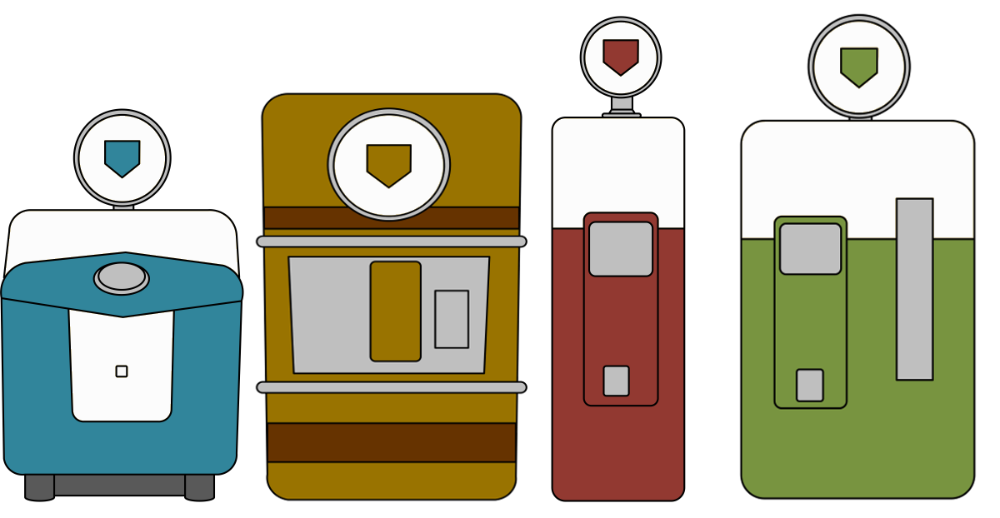

CONTENIDO DE LA PAGINA
Esta pagina se ha creado con fines de compartir,ayudar a aprender a la creacion de un mapa dentro de Call of Duty: Black Ops III y a aprender el lenguaje .GSC .CSC que viene deribado del lenguaje C e implementar cosas Basicas mecanicas dentro de su mapa